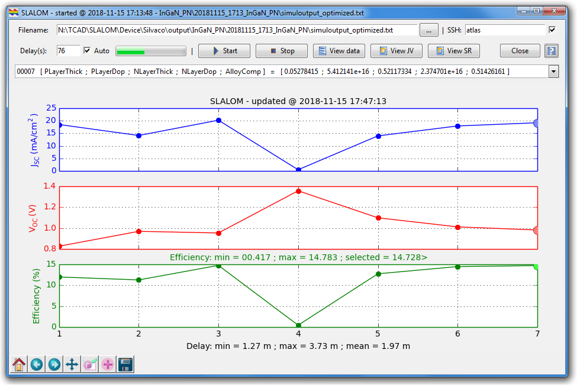
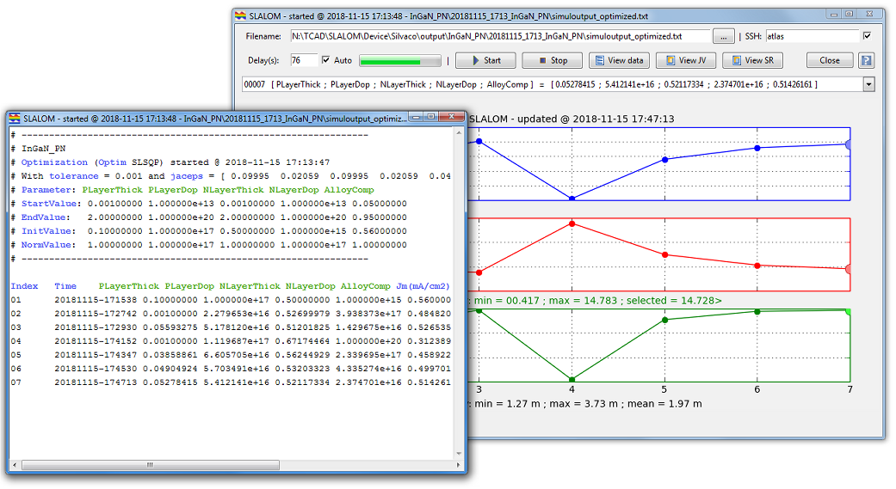
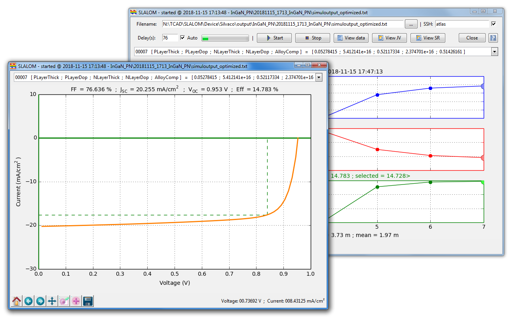
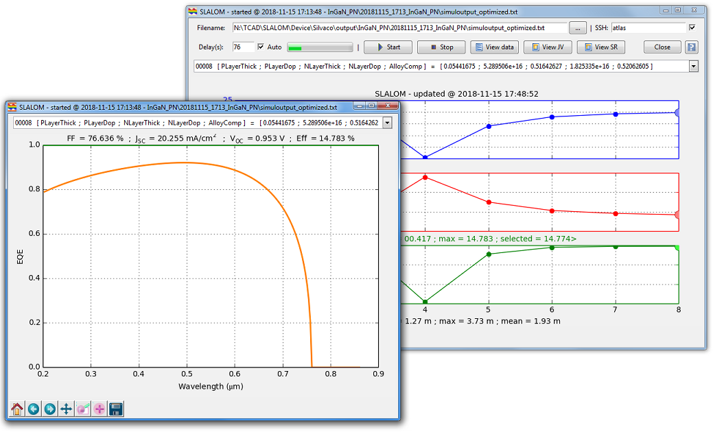

Complete documentation here: Guide/slalom_guide.pdf
SLALOM is a set of open-source Python programs implementing
a rigorous mathematical methods for the optimization of solar cells using as backend
a drift-diffusion device simulator.
It aims to be simple to use, to maintain and to extend.
It includes a core optimizer using the well tested robust mathematical methods,
a set of user interface utilities and some complete and working examples easily adaptable to
new solar cell technologies.
SLALOM uses, as device simulator, the Silvaco© Atlas tool.
It can be easily extended to use any simulator that have a standard input format and a command line interface.
SLALOM source code is available to download from:
https://github.com/sidihamady/SLALOM
https://hal.archives-ouvertes.fr/hal-01897934
http://www.hamady.org/photovoltaics/slalom_source.zip
SLALOM requirements:
Linux:
sudo yum install python-numpy python-scipy python-matplotlib python-matplotlib-tk python-tools
cd /opt
wget --no-check-certificate https://www.python.org/ftp/python/2.7.12/Python-2.7.12.tar.xz
tar -xvf Python-2.7.12.tar.xz
cd Python-2.7.12
./configure --prefix=/usr/local
make && make altinstall
wget https://bootstrap.pypa.io/get-pip.py
python2.7 get-pip.py
python2.7 -m pip install --upgrade numpy
python2.7 -m pip install --upgrade scipy
Windows:
Two methods (at least!) to install Python and scipy/numpy/matplotlib under Windows:
Method 1:
Method 2:
Download and install the Anaconda distribution: https://www.anaconda.com/distribution/
preferably pick Python 2.7 version
See Guide/slalom_guide.pdf for a complete guide.



